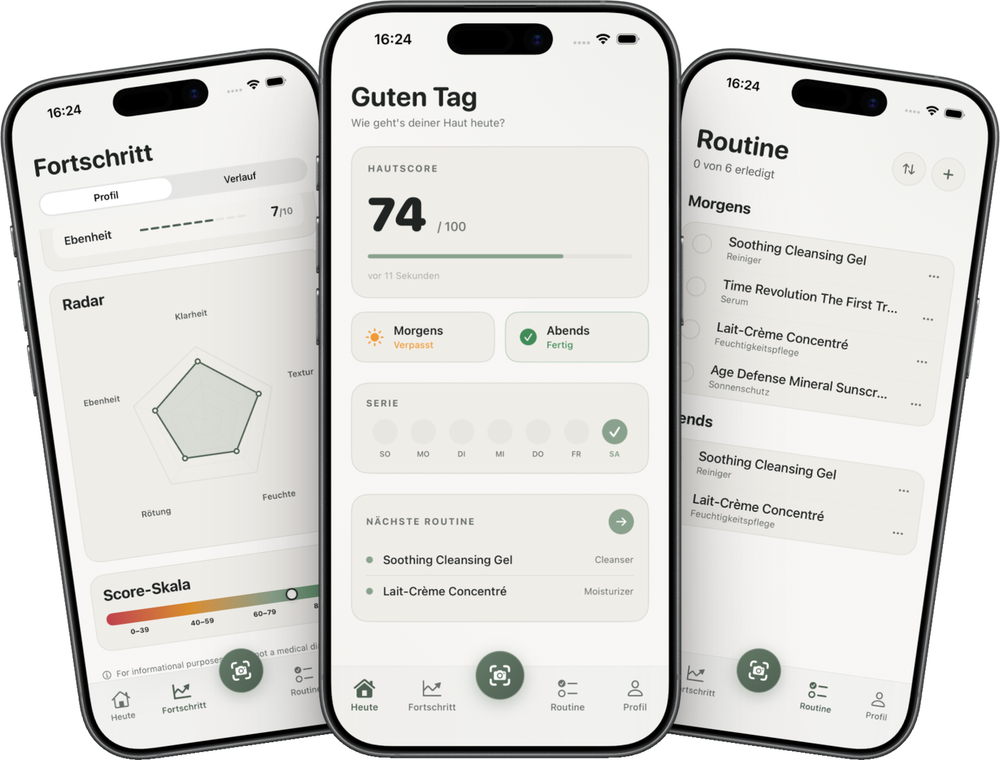
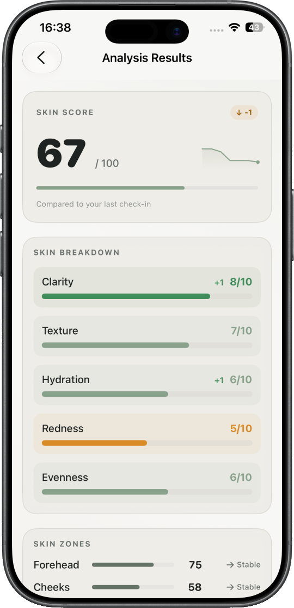
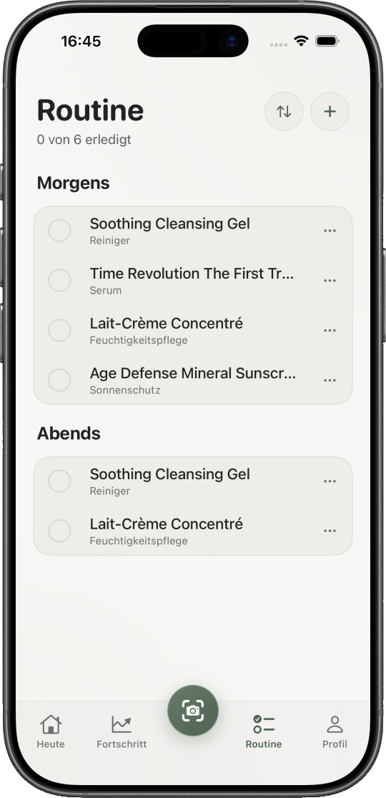
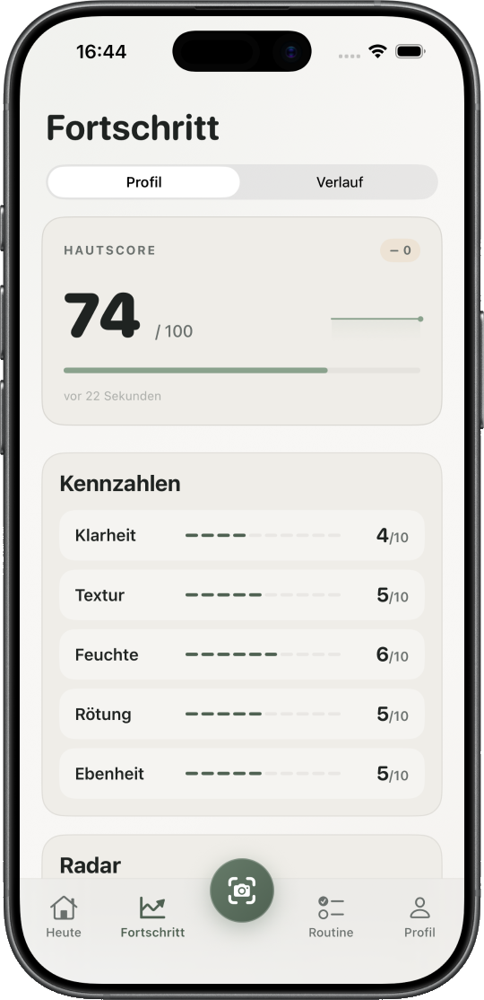

Lokal verschlüsselt
Deine Hautdaten liegen geschützt auf dem iPhone — mit iOS File-Protection und SwiftData.

Foto machen, KI-Analyse erhalten, Veränderungen über Wochen verfolgen, verständlich erklärt, motivierend aufbereitet und vollständig auf deinem iPhone.

Nach jedem Check-in bekommst du eine ausführliche Auswertung: Skin-Score im Vergleich zum letzten Mal, Aufschlüsselung nach Klarheit, Textur, Feuchtigkeit, Rötung und Ebenheit — plus Hautzonen wie Stirn und Wangen.

Morgens und abends: Reiniger, Serum, Feuchtigkeitspflege und Sonnenschutz — alles an einem Ort. Hake erledigte Schritte ab und behalte den Überblick, was wirklich zu dir passt.

Hautscore, Kennzahlen und Radar-Chart zeigen dir, wie sich deine Haut entwickelt. Vergleiche Check-ins und erkenne Trends, bevor du sie im Spiegel siehst.
Zieh am Griff und vergleiche beide Zeitpunkte. Genau dieser Vergleich begrüßt dich auch beim ersten Start der App.
Hautdaten sind sensibel. Genau deshalb bleibt fast alles auf deinem iPhone.
Deine Hautdaten liegen geschützt auf dem iPhone — mit iOS File-Protection und SwiftData.
Wir sagen klar, was lokal bleibt und was für die KI-Analyse an Google geht — ohne Kleingedrucktes.
Keine Registrierung, kein Login, keine Anzeigen. Du startest sofort — ohne Profil bei uns.
Daten löschen, exportieren oder die App deinstallieren — alles jederzeit in deiner Hand.
„Endlich eine Haut-App, bei der ich nicht das Gefühl habe, dass meine Fotos irgendwo landen. Der Skin-Score motiviert mich, jeden Abend dranzubleiben."
„Das Spot-Tracking mit dem Vorher/Nachher-Schieber ist unglaublich praktisch, um Veränderungen über Monate zu sehen."
„Die tägliche Routine-Erinnerung und die Streaks haben tatsächlich meine Hautpflege verändert. 14 Tage am Stück. "
„Schön gestaltet, schnell und ehrlich beim Thema Daten. Man merkt, dass hier mit Liebe entwickelt wurde."
„Die Wochen-Recaps sind richtig hilfreich. Ich verstehe meine Haut zum ersten Mal wirklich."
„Die Detailanalyse mit Klarheit, Textur und Hautzonen ist genau das, was mir bei anderen Apps gefehlt hat."
„Meine Morgen- und Abendroutine endlich an einem Ort. Hake ab, was erledigt ist — super übersichtlich."
„Der Fortschritts-Screen mit Hautscore und Radar zeigt mir Trends, die ich im Spiegel gar nicht sehe."
„Kein Konto, kein Login — einfach öffnen und loslegen. Genau so soll eine App sein."
„Der Vorher/Nachher-Vergleich beim Start hat mich sofort überzeugt. Man sieht den Unterschied auf einen Blick."
Kostenlos starten, ohne Konto. Für iPhone & iPad.
DermaScan ist kein medizinisches Diagnosewerkzeug und ersetzt keine ärztliche Untersuchung.